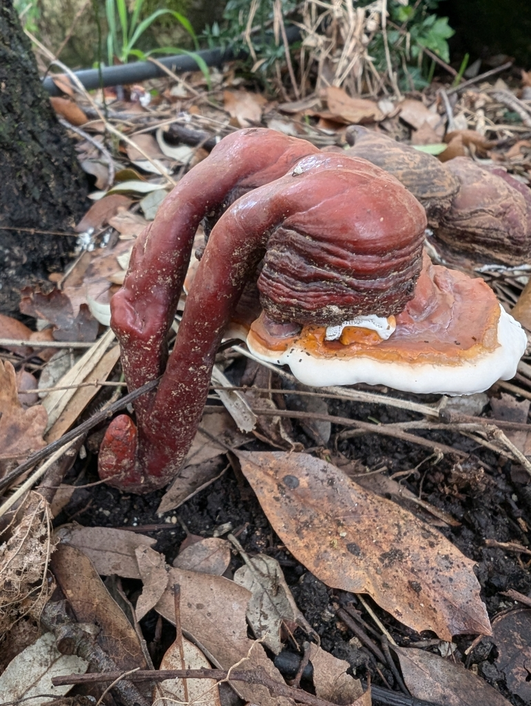
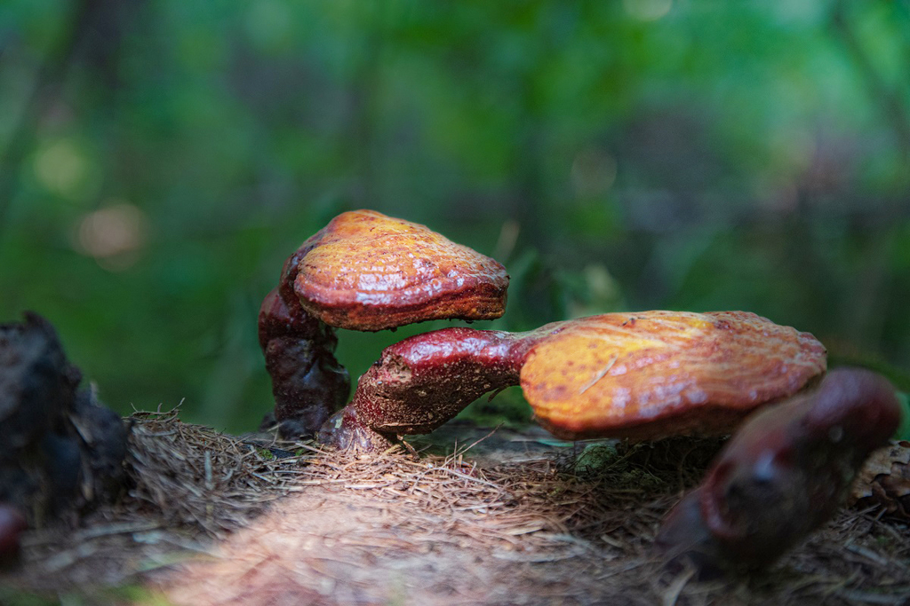

Lakownica lśniąca




Opis i występowanie
Lakownica lśniąca to jeden z najsłynniejszych grzybów leczniczych świata — znana w Japonii jako Reishi (霊芝), w Chinach jako Lingzhi (靈芝) — „Grzyb Nieśmiertelności". W Polsce, Czechach i Słowacji rośnie naturalnie na pniakach i martwych pniach drzew liściastych, głównie dębów, buków i wiązów.
Kapelusz nerkowy do wachlarzowatego, 5–30 cm, z unikalną lakierowaną, lśniącą powierzchnią w kolorach czerwonawych, kasztanowych, fioletowych. Trzonek boczny lub centralny, długi, też lakierowany. Dolna strona biała z drobnymi porami (brązowieje po dotyku lub z wiekiem). Miąższ korowatobrązowy, bardzo twardy, o gorzkim smaku. Nie nadaje się do jedzenia jako potrawa, ale jest doskonałym surowcem do naparów i nalewek.
Związek z drzewem
Lakownica lśniąca jest głównie saprofitem — rozkłada martwe drewno, wywołując białą zgniliznę (rozkłada ligninę, pozostawiając jasne, włókniste drewno). Rzadziej atakuje żywe, osłabione drzewa jako pasożyt oportunistyczny. Nie zabija zdrowych drzew, lecz przyspiesza rozkład już zamierającego drewna i pniaków, pełniąc rolę naturalnego „recyclera" leśnego.
| Drzewo-żywiciel | Częstość | Uwagi |
|---|---|---|
| Dąb (Quercus) | ⭐⭐⭐⭐⭐ bardzo często | Pniaki dębowe, podstawa starych dębów; najczęstsze znalezisko |
| Buk (Fagus sylvatica) | ⭐⭐⭐⭐ często | Buczyny i grądy; owocniki zazwyczaj wyżej na pniu |
| Wiąz (Ulmus) | ⭐⭐⭐ umiarkowanie | Łęgi, aleje; drzewa osłabione holenderską chorobą wiązów |
| Lipa (Tilia) | ⭐⭐⭐ umiarkowanie | Aleje, parki miejskie; często u podstawy starych lip |
| Kasztanowiec (Aesculus hippocastanum) | ⭐⭐ rzadziej | Parki i aleje; drzewa osłabione szrotówkiem kasztanowcowym |
| Platan (Platanus) | ⭐⭐ rzadziej | Parki, rzadziej lasy; południe Polski i Czech |
| Iglaste (sosna, świerk) | ⭐ sporadycznie | Wyjątkowo; zwykle na pniakach, nie owocnikuje na iglastych licznie |
Skład aktywny — działanie potwierdzone badaniami
| Substancja aktywna | Efekt biologiczny (badania) |
|---|---|
| Beta-glukany (polisacharydy) | Stymulacja układu odpornościowego — najlepiej udokumentowane działanie |
| Kwasy ganodermowe (triterpeny) | Działanie przeciwzapalne, przeciwalergiczne, hamowanie wzrostu nowotworów w modelach in vitro |
| Adenozyna | Działanie rozszerzające naczynia krwionośne, normalizacja ciśnienia |
| Ergosterol | Prekursor witaminy D2, działanie przeciwgrzybicze |
| Lanosporyna | Aktywność przeciwbakteryjna |
| Germanium organiczne | Poprawa dotlenienia tkanek — dane wstępne |
Zbiór i przygotowanie surowca
- Zbieraj całe owocniki lub odcinaj nożem — miąższ jest zbyt twardy do łamania.
- Najlepsze okazy: dojrzałe, ale jeszcze ze świeżą dolną stroną (białe lub kremowe pory).
- Suszyć w 40–50°C do całkowitego wyschnięcia (kilka dni). Wysuszone zachowują aktywność 1–2 lata.
- Zmielić w młynku na proszek lub kroić w plastry do naparów.
- Stare roczne owocniki (szare, spróchniałe) — porzuć.
Preparaty lecznicze — recepty
🍵 Herbata Reishi (podstawowa)
- Suszone plastry lakownicy (5–10 g) zalej 500 ml zimnej wody.
- Doprowadź do wrzenia, zmniejsz ogień i gotuj pod przykryciem 20–30 min.
- Przecedź. Napój ma ciemnobrązowy kolor i gorzki smak.
- Można dosłodzić miodem lub dodać kawałek imbiru i cynamon. Pić 1–2 filiżanki dziennie.
🫙 Nalewka z lakownicy (Reishi tincture)
- Suszone plastry lakownicy (50 g) zalej 500 ml wódki 40% lub spirytusu rozcieńczonego do 50–60%.
- Szczelnie zamknij w słoiku. Odstaw w ciemne miejsce na 4–6 tygodni, wstrząsaj co 2–3 dni.
- Przecedź przez gazę, odciśnij surowiec. Przelej do ciemnych butelek.
- Stosować 20–30 kropli dziennie w wodzie lub herbacie. Przechowuje się 2–3 lata.
☕ Kawa Reishi (Mushroom Coffee)
- Zmiel suszone plastry lakownicy na proszek w młynku do kawy.
- Proszek Reishi (1 łyżeczka) wymieszaj z łyżeczką kawy espresso lub kakao.
- Zalej 200 ml gorącej wody lub mleka roślinnego.
- Dosłódź miodem. Modna forma podawania — łagodzi goryczę kawy i dodaje adaptogenów.
💊 Proszek Reishi do kapsułek
- Suszone plastry lakownicy zmiel w blenderze lub młynku na drobny proszek.
- Przesiej przez sito, ewentualnie zmiel ponownie grubsze kawałki.
- Napełnij kapsułki "00" (ok. 500 mg proszku każda) lub "0" (ok. 400 mg).
- Typowa dawka: 1–3 kapsułki dziennie (1–1,5 g proszku). Przechowuj w ciemnym, suchym miejscu.
✓ Zalety
- 2000 lat tradycji leczniczej w Azji — największa historia stosowania
- Udokumentowane działanie immunostymulujące w badaniach klinicznych
- Rośnie całorocznie — można zbierać przez cały rok
- Brak mylących sobowtórów — lakierowana powierzchnia unikalna
- Liczne formy stosowania: herbata, nalewka, proszek, kapsułki
- Trwałość: suszone zachowuje aktywność 1–2 lata
✗ Wady i uwagi
- Nie jadalna jako potrawa — zbyt twarda i gorzka
- Interakcje z lekami: antykoagulanty, leki na ciśnienie, immunosupresja
- Nie stosować przed operacją (wpływ na krzepliwość)
- Efekty lecznicze wymagają regularnego, długotrwałego stosowania
- W Polsce relatywnie rzadka — łatwiej kupić jako suplement
Ciekawostki
- Lakownica lśniąca jest wzmiankowana w chińskich tekstach medycznych sprzed ponad 2000 lat jako „grzyb nieśmiertelności". W starożytnych malowidłach cesarskich pojawia się jako symbol długowieczności i boskości.
- Nazwa „Ganoderma" pochodzi z greki: ganos = blask, derma = skóra — „skóra która lśni".
- Lakownica wytwarza ogromne ilości zarodników rdzawych — wokół starych owocników widać rdzawy „pył" na liściach i ziemi. Zarodniki mają własne właściwości lecznicze i są sprzedawane osobno jako Reishi spore powder.
- Na rynku suplementów Reishi to jeden z najlepiej zbadanych adaptogenów — setki badań klinicznych, liczne meta-analizy. Największe dowody dotyczą wsparcia odporności przy chemioterapii.
- Lakownica może przeżyć kilka lat — stare owocniki twardnieją, rok po roku dodają nowe warstwy porów u dołu (podobnie jak słoje w drzewie).